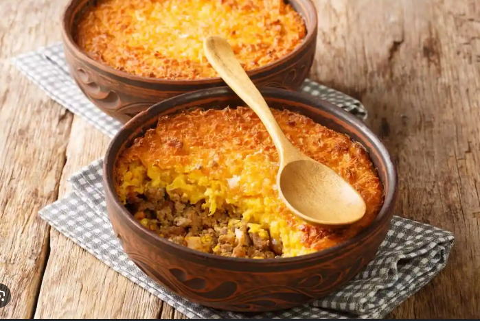
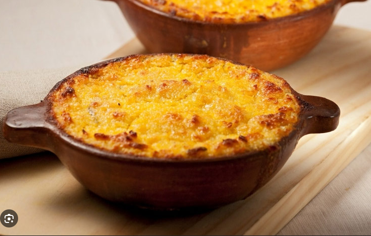

Especialidades de la Casa
- Curanto en olla
- Plato típico del sur de Chile con mariscos, carnes, papas y chapaleles.
- Carbonada
- Guiso tradicional con carne, papas, arroz y verduras.
Promociones Especiales
- ¡Oferta del día! Lomo a lo pobre con bebida por $10.000.
- 20% de descuento en empanadas de pino los viernes.
- Postre gratis por consumo mayor a $20.000.
Plato de la Semana: Pastel de Choclo
El pastel de choclo es una preparación tradicional chilena que combina una base de pino (carne molida, cebolla, huevo duro, aceitunas) cubierta con una capa de maíz molido y horneado hasta dorar.


Puedes escuchar también el siguiente audio, el cual contiene una explicación resumida del proceso de elaboración de este delicioso plato:
Más información en: Wikipedia - Pastel de Choclo
Videos relacionados
Aprende a preparar platos típicos con este video recomendado: